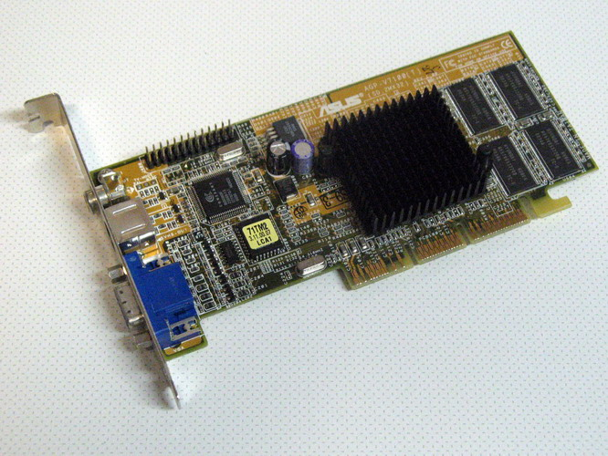
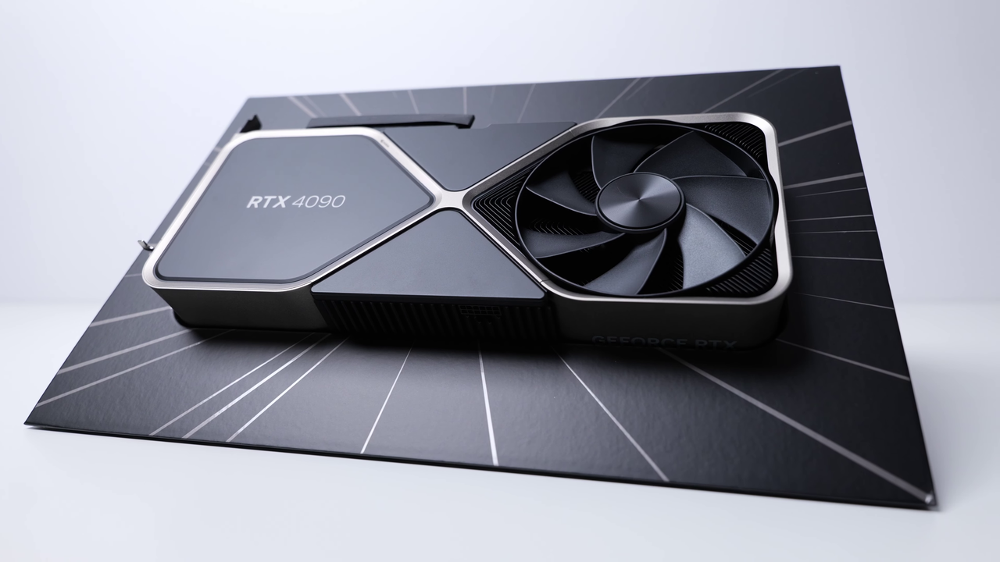

# What is a GPU? ## A brief introduction for REG
## Take Home Messages - Separate devices with own memory - Many (thousands) of cores - Each does the same thing - Vector operations are **very** fast - Reductions are quite fast - Transferring data is **slow** <aside data-markdown class="notes"> - These points are a simplification - I may say things I know not to be quite true, or simply be wrong - But this is all you need to know - GPUs are a separate device with their own processors and memory - GPUs have many (thousands) of cores - Many cores work together, performing the same operations on multiple pieces of data - Each core executes the same operations - Vector operations are **very** fast compared to CPU - Reductions are quite fast compared to CPU - Transferring data to and from the GPU is a common bottleneck </aside>
## What is a GPU?
For Graphics

Thiemo Schuff
,
CC BY-SA 3.0 DE
, via Wikimedia Commons

ZMASLO
,
CC BY 3.0
, via Wikimedia Commons
### General-Purpose Computing on GPUs - More recently support for GPGPU - Similar to vector processors - Support for IEEE floating point and double-precision growing. <aside data-markdown class="notes"> - As the computational throughput increased, interest in using GPUs for general-purpose computing arose - Somewhat similar to vector processors seen in supercomputers in the 70s–80s </aside>
### SIMD - GPUs have many cores which perform the same operations - The reality is more complex with groupings of cores, memory - Single instruction multiple data
## Programming a GPU
## Device Kernel 1: Vector Add
## Device Kernel 2: Matrix Multiplication
## Host Code - Identify devices - Create context - Allocate device/host memory - **Enqueue** kernels with given dimensions, inputs
## Higher Level Interface - You *probably* shouldn't write kernels - Are you likely to write a more performant and stable algorithm? - Order of preference 1. Accelerated libraries (_e.g._ cuBLAS, numba, oneMKL, _etc._) 1. Embedded domain-specific languages (SYCL, OpenACC) 1. Kernels (CUDA, HIP, OpenCL)
## Why do we Care?
### Accelerating AI and ML
### Energy Efficiency - Typically higher FLOPS per Watt than CPU - Data Centres - Energy efficiency - Recycling waste heat - Lower impact cooling
### Data Centres - Maximising performance - Multiple GPUs per node - High speed interconnect between GPUs - High performance storage
{kind=link}
.png){kind=link}